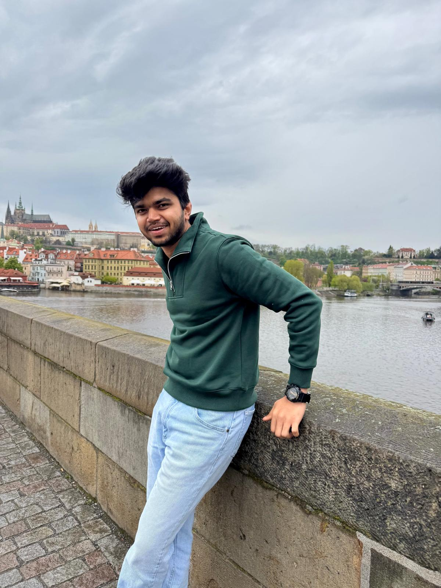

KONGARASAN
AI / ML Engineer
I build RAG systems, LLM agents and computer-vision products, end to end. M.Sc. Computer Science @ Universität Passau.
See my work ↓
SATHIYA MOORTHY
Selected
work
( 08 projects )
2022 — 2026
- 01
RAG Assistant
FastAPI · LangChain · FAISS · LLaMA 3.3
2026Upload a PDF and ask grounded questions. The pipeline uses chunking, embeddings and FAISS retrieval, with LLaMA 3.3 70B via Groq and a React UI. View on GitHub ? - 02
AirNetBus
TUM Hackathon · Airbus challenge
2026Decentralised AI coordination for eVTOL fleets, built in 48 hours, with a digital twin of Munich and multi-objective routing. View on GitHub ? - 03
Resonance Landscape
librosa · GLSL · ModernGL
2026Orchestral music turned into cinematic video. Audio features drive a GPU shader rendered with ModernGL and exported with FFmpeg. View on GitHub ? - 04
OpenEYE
YOLOv8 · Transformers · React Native
2023An assistive app for visually impaired users, with real-time object detection, scene captioning and indoor navigation. View on GitHub ? - 05
Woodie
React · Three.js · Node · Kotlin
2024A QR-powered sustainability platform with 3D plants, live on the SRM University campus. I built it end to end. View on GitHub ? - 06
AI Resume Analyzer
Gemini · FastAPI · Streamlit
2025An LLM scoring system with NLP pipelines and synthetic datasets for reproducible robustness tests. - 07
AI Workflow Automation
n8n · REST · GPT
2025Agent-like pipelines that chain several LLM APIs, with benchmarking to choose the best model per task. - 08
Book Data Integration
spaCy · TF-IDF · Python
2025Schema and entity matching across Amazon, Goodreads and Kindle data, using six matchers evaluated with precision, recall and F1. View on GitHub ?
I turn research into products people actually use.
( about )
I'm an AI/ML engineer from India, now based in Munich. I like owning the whole stack, from Figma to PyTorch to Nginx.
— Kongarasan
( now )
M.Sc. Computer Science
Universität Passau
def build(idea):
return ship(rag(idea) + ux(idea))
( based in )
Munich, DE
What I
do
( expertise )
01GenAI & LLM Systems+
Retrieval-augmented generation, agent workflows, prompt and eval pipelines, and model benchmarking.
- LangChain
- FAISS
- Groq / Gemini / GPT
- n8n
02Machine Learning & Vision+
Training and deploying models for detection, captioning and audio analysis.
- PyTorch
- YOLOv8
- Transformers
- librosa
03Backend & Data+
Production APIs, data integration and matching pipelines.
- Python
- FastAPI
- SQL
- Node.js
- Pandas
04Frontend, 3D & Mobile+
Interfaces from Figma to production, plus GPU shaders and 3D.
- React
- Three.js
- GLSL
- React Native
- Kotlin
The
journey
( experience & education )
M.Sc. Computer Science
Universität Passau, Germany
8th TUM Science Hackathon
TUM: Junge Akademie · Airbus challenge
Software Engineer Intern
Triotek Nanocare Solutions · Remote
SRM Institute of Science & Technology
Chennai, India
Meta · Coursera · UpSkillz
Mobile Dev · AI for Everyone · Cloud